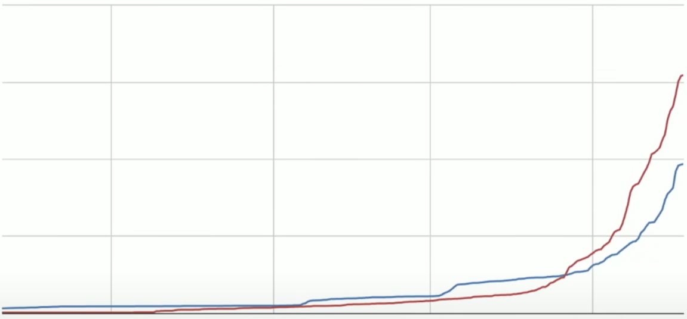
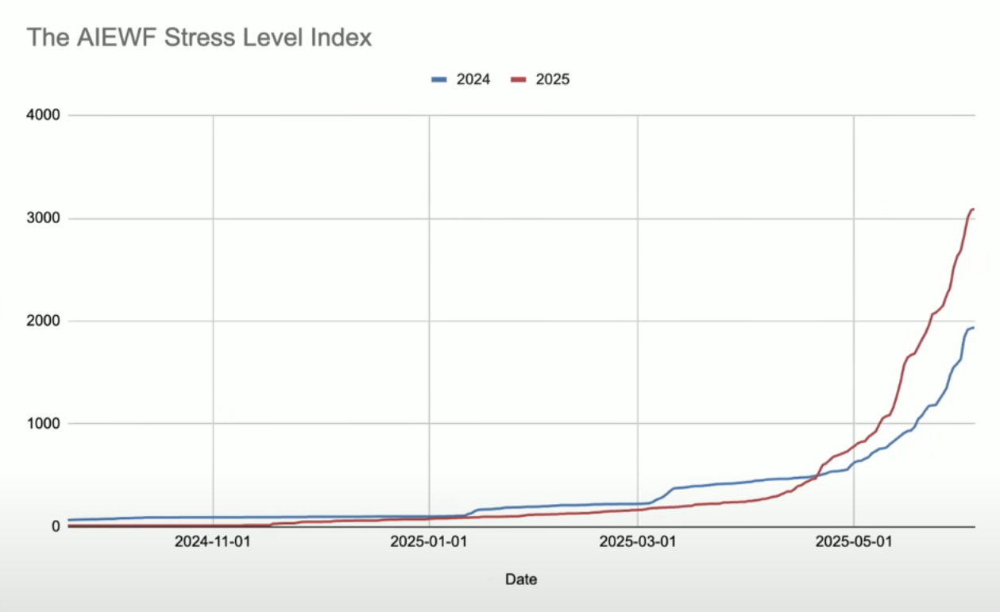

A Growth Strategy for AI Engineer Events
It is an event that has changed my life

B2D isn’t selling to developers, it’s empowering developers to sell their bosses
Create content that helps engineers make the business case:
5 Ways AIE Paris Will Level Up Your TeamHow to Convince Your Boss This Event is Worth the InvestmentQuick Win: Add prominent community hub links in main navigation
#hiring channel provides ongoing value for job seekers#random is the most active channel 2 months after the event, not #generalOffice Hours: Biweekly community calls to maintain momentum
#tool-talk, #hiringShorts Strategy: 3 clips per week from existing talks
Deep Dive Analytics
Team Integration
Community Research
#generalData Informed Optimization
Strategic Scaling
My approach is to be a genuine, trusted member of the community first. Representation must be authentic to be effective. It’s about fostering real conversations, not just broadcasting a brand message.
While engagement metrics are important, the ultimate goal is business impact.
Personal success is to build solutions, automations (for this position) using the technology I am obsessed with so I can present new findings and productive tips to the new class of engineers.
This is coined the “Gini coefficient of AIE Organizer Stress” by Swyx on stage. 
Ready to transform AIE’s community engagement and drive measurable business results.